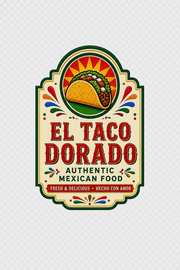

Signature
Birria Tacos
Rich, tender beef, melted cheese, onion, cilantro, and savory consommé for dipping.

Authentic Mexican Food
Colorful plates, time-honored recipes, warm hospitality, and the kind of food that makes everyone reach for one more taco.
A table worth gathering around
El Taco Dorado brings the warmth, color, and soul of authentic Mexican cooking into a fresh, lively dining experience. From slow-cooked meats and crisp toppings to bright salsas and warm tortillas, every plate is built around flavor.
Come hungry. Bring friends. Stay awhile.
See what we're serving →Fan favorites
Signature dishes designed to look as unforgettable as they taste.
Signature
Rich, tender beef, melted cheese, onion, cilantro, and savory consommé for dipping.
Classic
Warm corn tortillas, seasoned meat, fresh cilantro, onion, lime, and house salsa.
Golden
Crisp golden tacos finished with crema, queso, lettuce, salsa, and bright garnishes.
Bring the fiesta
Office lunches, birthdays, family celebrations, graduations, showers, and big weekends — bring El Taco Dorado to the table with easy crowd-friendly packages.
More than a meal
Made-to-order favorites without the fuss.
A modern space with Mexican soul.
Dine in, take out, cater, repeat.
Visit El Taco Dorado
Add restaurant address here
Mon–Thu 11am–9pm
Fri–Sat 11am–10pm
Sun 11am–9pm
(000) 000-0000
Hungry yet?
Order your favorites for pickup and bring a little more color to your day.
Start Your Order